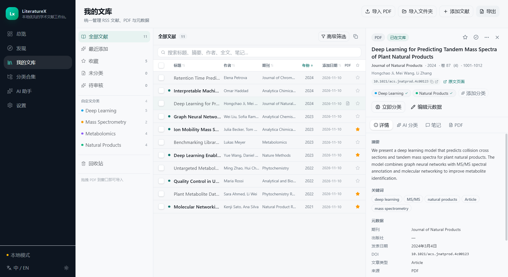
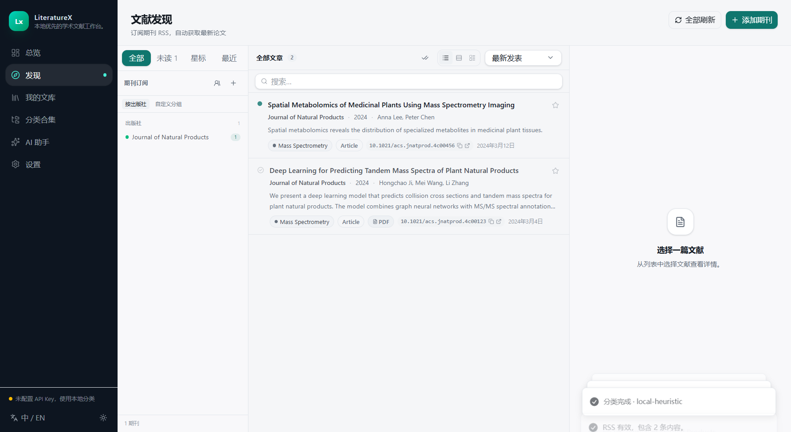
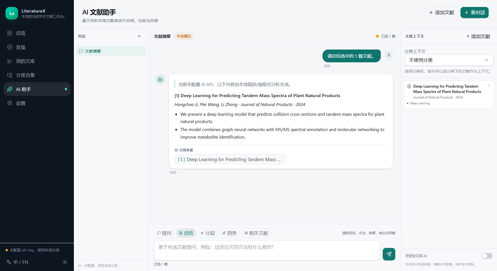
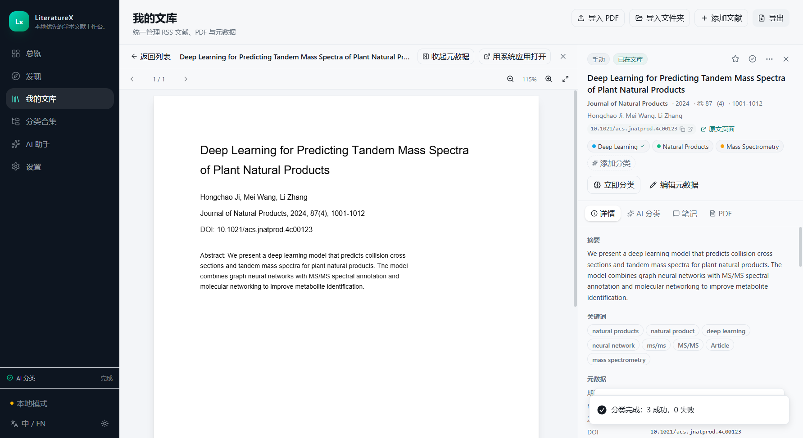
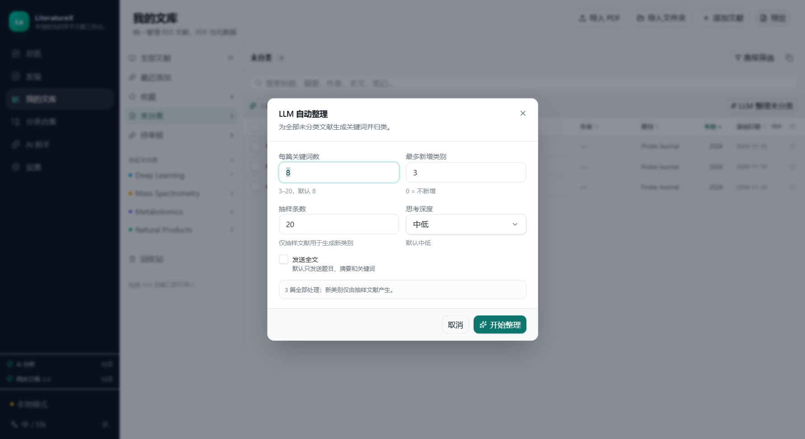
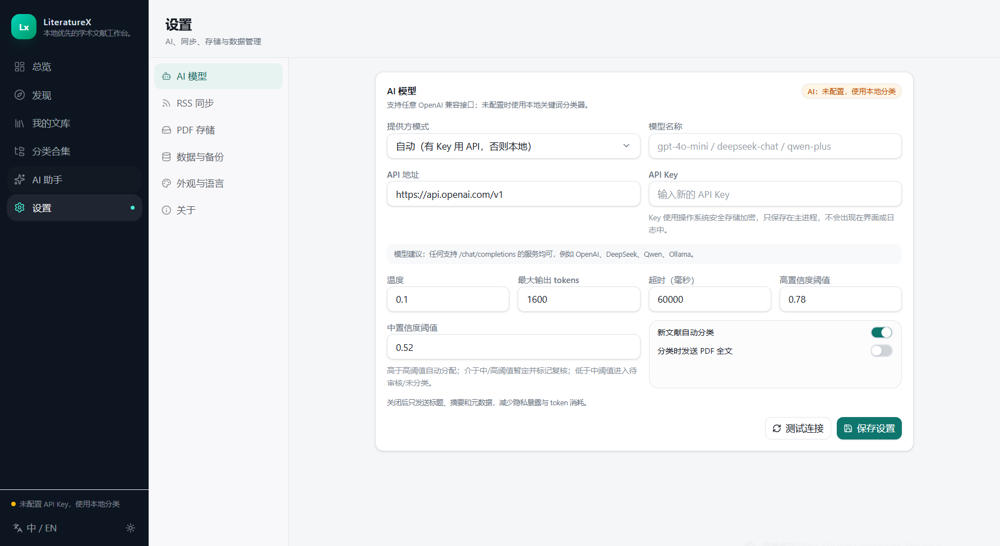

期刊 RSS 发现
搜索期刊并自动发现 RSS/Atom 源，订阅、分组、增量同步，新文章自动进入发现页。
从期刊 RSS 发现、文献库管理，到内置 PDF 阅读与 LLM 分类，LiteratureX 把整条科研阅读流程放进一个桌面应用。数据默认保存在本机。

简洁的界面，实用的能力，不需要在多个工具之间来回切换。
搜索期刊并自动发现 RSS/Atom 源，订阅、分组、增量同步，新文章自动进入发现页。
RSS、PDF、DOI 与 BibTeX/RIS 导入统一管理，支持元数据补全、分类、笔记与全文检索。
连续滚动阅读、缩放与适应宽度；右侧元数据可一键收起，也可随时改用系统应用打开。
订阅文章自动打标签，未分类文献批量整理；可设置新增类别上限、抽样条数与思考深度。
基于你的文献库进行总结、比较、趋势分析与问答；回答引用真实文献，不编造来源。
在 WPS Writer 或 Microsoft Word 中搜索文献、插入引用并生成参考文献表。
不需要先配置 AI，所有核心功能都可以本地使用；需要时再接入 OpenAI 兼容模型。
在「我的文库」导入单个/多个 PDF、整个文件夹，或直接拖入窗口；在「发现」搜索期刊名/ISSN，自动发现 RSS 源并同步新文章。
在「分类合集」创建多级分类，填写关键词、同义词和分类规则。分类可以多选合并，并由 LLM 生成合并后的名称、描述和关键词。
打开「未分类」，运行「LLM 整理未分类」。可设置最多新增类别数、抽样条数、是否发送全文（默认仅题目/摘要）和思考深度（默认中低）。
双击文献在内置阅读器中连续滚动阅读；用全文搜索或 AI 助手总结、比较与问答；在 WPS/Word 中插入引用并生成参考文献表。





默认在 %APPDATA%\LiteratureX：SQLite 数据库、PDF 与自动备份都在本机。
不需要。未配置 API Key 时，分类使用本地关键词分类器，助手提供抽取式摘要与库内检索。
在「设置 → 数据与备份」创建完整备份，包含数据库（不含明文 Key）与托管 PDF，可在新机器恢复。
Windows 10/11 x64。提供安装包与免安装便携版；首次运行可能被 SmartScreen 提示，因为安装包未签名。